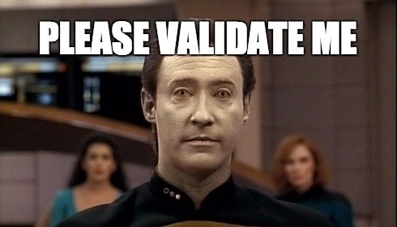

flowchart LR A[clean data] --> S[split data] S --> B[train model] B --> C[evaluate model] S --> C
Validating and Testing R DataFrames with pandera and reticulate
Niels Bantilan
2023-09-30
Dealing with invalid data üò≠

Data validation is important…
‚Ķ but tedious üòë
“Garbage in, garbage out”
“Data-centric machine learning”
“Data as code”
“But I just want to train my model!”
Data validation can be fun üéâ
Data validation is like unit testing for your data
$ run pipeline- ✅
dataset_x_validation - ✅
dataset_y_validation - ✅
dataset_z_validation
‚ú®ü療ú®
So what? ü§∑‚Äç‚ôÇÔ∏è
Data validation is about understanding what counts as valid data and capturing that understanding as a schema.
By using pandera in your Python and R stacks, you get:
- ⭐️ A single source of truth
- üìñ Data documentation as code
- üîé Run-time dataframe enforcers
A day in the life of a data scientist
A day in the life of a data scientist
flowchart LR A[clean data] --> S[split data] S --> B[train model] B --> C[evaluate model] S --> C style B fill:#e0e0e0,stroke:#7f7f7f
A day in the life of a data scientist
flowchart LR A[clean data] --> S[split data] S --> B[train model] B --> C[evaluate model] S --> C style B fill:#8cffb4,stroke:#2bb55b style C fill:#ff8c8c,stroke:#bc3131
A day in the life of a data scientist
Unit Tests
- ✅
test_clean_data - ✅
test_split_data - ✅
test_train_model - ✅
test_evaluate_model
Data Tests
- ✅
validate_cleaned_data - ✅
validate_split_data - ✅
validate_training_data - ✅
validate_metrics_data
A day in the life of a data scientist
Unit Tests
- ✅
test_clean_data - ✅
test_split_data - ✅
test_train_model - ❌
test_evaluate_model
Data Tests
- ✅
validate_cleaned_data - ❌
validate_split_data - ✅
validate_training_data - ✅
validate_metrics_data
The data validation journey
Implementing a data pipeline: before
flowchart LR
G[Define Goal]
E[Explore]
I[Implement]
S[Spot Check]
P{Pass?}
C[Continue]
G --> E
E --> I
I --> S
S --> P
P -- Yes --> C
P -- No --> E
The data validation journey
Implementing a data pipeline: after
flowchart LR
G[Define Goal]
E[Explore]
I[Implement]
T[Define Schema]
S[Validate]
P{Pass?}
C[Continue]
G --> E
E --> I
E --> T
I --> S
T --> S
S --> P
P -- Yes --> C
P -- No --> E
style S fill:#8cffb4,stroke:#2bb55b
style T fill:#FFF2CC,stroke:#e2b128
There‚Äôs no substitute for understanding your data with your own eyes üëÄ
How pandera works
pandera provides a flexible and light-weight toolkit for data validation.
Define Goal
Predict the price of items a produce transaction dataset
Explore the data

Capture our understanding
itemis a categorical variable represented as a string.itemcontains three possible values:orange,apple, andbanana.priceis an integer.priceis a positive value.- neither column can contain null values
Define a schema
Class-based API
Validate the data
If the data are valid, Schema.validate simply returns the valid data:
Validate the data
But if not, it raises an exception:
schema_context column ... failure_case index
0 Column item ... squash 2
1 Column price ... NaN 1
2 Column price ... -1000.0 2
[3 rows x 6 columns]Functional Validation
schema_context column ... failure_case index
0 Column item ... squash 2
1 Column price ... NaN 1
2 Column price ... -1000.0 2
[3 rows x 6 columns]Using pandera in R via reticulate
It just works! üî•
Catch the Python Exception
Get the failure cases
# get failed rows don't forget the 0- to 1-based index conversion!
failure_cases <- exception$failure_cases
failed_rows <- as.character(failure_cases$index + 1)
print(failure_cases) schema_context column check check_number
1 Column item isin(['apple', 'orange', 'banana']) 0
2 Column price not_nullable NULL
failure_case index
1 applee 0
2 <NA> 2Filter out Invalid Rows
Get pandera set up on your stack in 5 minutes
Install pandera
Define and import schema
